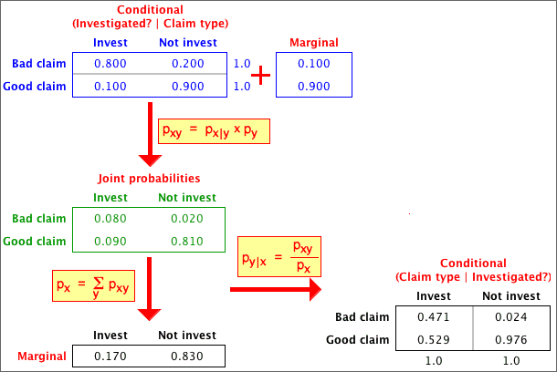

Marginal and conditional probs can be found from joint probs (and vice versa)
We have used three types of probability to describe a model for two categorical variables — the joint probabilities, the marginal probabilities for the two variables and the conditional probabilities for each variable given the value of the other variable. These sets of probabilities are closely related. Indeed, the model can be equivalently described by any of the following.
Each can be found from the others:
Bayes theorem
In particular, note that it is possible to obtain the conditional probabilities for X given Y, px | y, from the marginal probabilities of X, px, and the conditional probabilities for Y given X, py | x. This can be expressed in a single formula that is called Bayes Theorem, but it is easier in practice to do the calculations in two steps, obtaining the joint probabilities, pxy, in the first step. There are several important applications of Bayes Theorem.
Detection of fraudulent tax claims
Tax inspectors investigate some of the tax returns that are submitted by individuals if they think that some claims for expenses are too high or are unjustified. There are two possible types of error when an inspector decides whether or not to investigate a claim:
Consider a procedure with
p investigated | good claim = 0.1 pnot investigated | bad claim = 0.2
From these, we can also write
p not investigated | good claim = 0.9 pinvestigated | bad claim = 0.8
We will also assume that 10% of tax returns have bad claims,
p bad claim = 0.10
From this information, we can find the probabilities of a claim being bad, given the decision about whether or not to investigate it,
